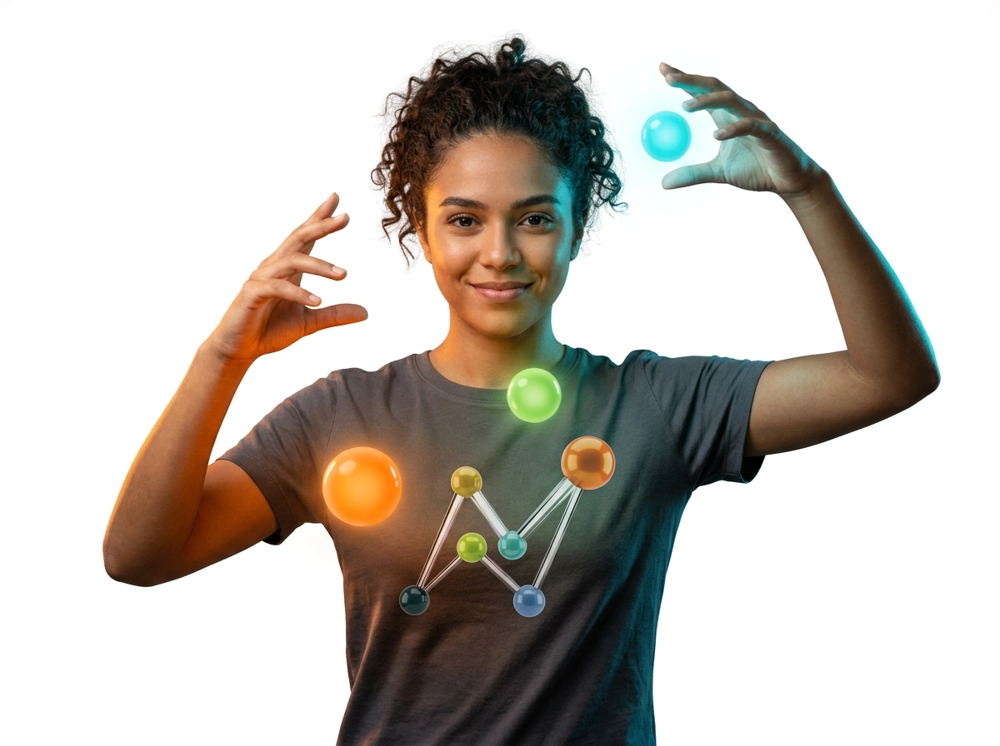

Núcleo 02 — O Ecossistema

Núcleo 03 — O Diferencial
Você é o Hub.
Metodologia ágil que acelera a conexão com as oportunidades reais.


Núcleo 04 — Empresas
Treinar custa.
Não treinar custa o dobro.
Transforme o custo do retrabalho no lucro da eficiência.

Núcleo 05 — Gestão Pública
Invista na qualificação.
Fortaleça sua gestão e construa um legado social.